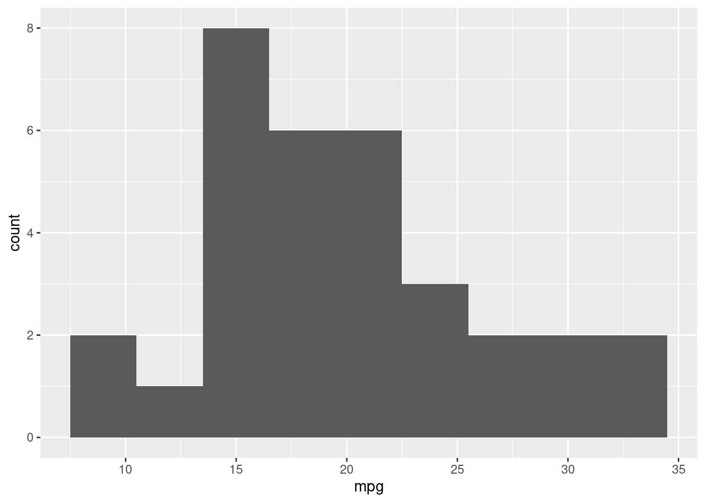
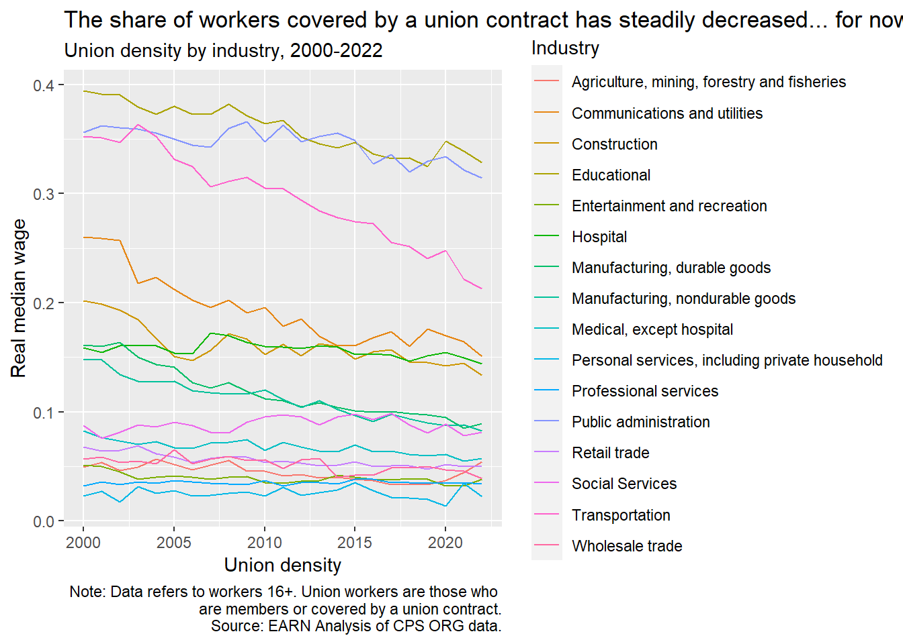
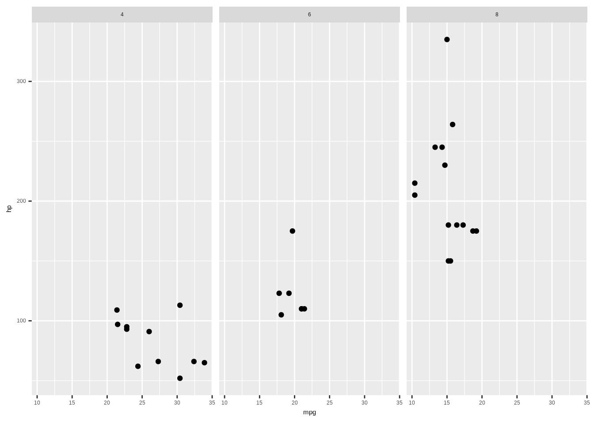
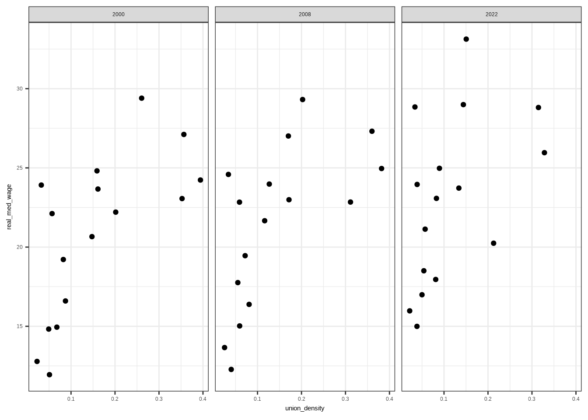

#First thing first, install Tidyverse using
# install.packages('tidyverse')
# install.packages('highcharter')
#Load tidyverse library
library(tidyverse)
library(here)
mtcars <- mtcarsVisualizing Data
Welcome to the Visualizing Data training
This training was originally presented as a workshop at EARNCon 2023.
In this training you will learn how to create data visualizations using free tools like ggplot2 and Tableau.
1. Introduction
1.1 Brief overview of ggplot2
ggplot2 is a data visualization package for R that allows users to create complex plots in a structured manner. It’s based on the Grammar of Graphics, which provides a coherent system for describing and building graphics.
1.2 Philosophy behind ggplot2
At the core of ggplot2 is the idea of layers. This means starting with a blank canvas and then iteratively adding layers to create the desired visualization.
2. Basic chart creation
2.1. Basic syntax: The Big Three
ggplot()aes()- geom_point()
The foundation of any ggplot2 visualization starts with the ggplot() function. Within ggplot(), we call aes() to designate aesthetic mappings, and then append geometries like geom_point() to visually represent data points.
2.2. Practical example
Using the mtcars dataset, we’ll illustrate the relationship between a car’s horsepower (hp) and its fuel efficiency (mpg).
A simple scatter plot:
# A simple scatter
ggplot(data = mtcars, aes(x=mpg, y=hp)) +
geom_point()
A simple histogram using geom_histogram()
ggplot(mtcars, aes(x=mpg)) +
geom_histogram(binwidth=3)
3. Adding layers and customizations
# Load some data from Github.
# Major industries, union density, real median wages, and employment. 2000 to 2022
ind_data <- read.csv(url('https://raw.githubusercontent.com/Economic/earn_code_library/main/data/industry_union_wage_emp.csv'))
# ind_data <- read_csv(file = here('data/industry_union_wage_emp.csv'), col_names = TRUE)
#Keep 2022 data
ind_data2022 <- ind_data %>%
filter(year==2022)
ggplot(ind_data2022, aes(x=union_density, y=real_med_wage)) +
geom_point()
3.1 Adding geometries
An insightful visualization often arises from combining various layers and customizing aesthetics.
Building on our scatter plot from earlier, let’s include a smoothed line to better discern the relationship between mpg and hp:
ggplot(data=ind_data2022, aes(x=union_density, y=real_med_wage)) +
geom_point() +
# Add a smoothed line with customized aesthetics
geom_smooth(method = 'lm', se = FALSE, col = "red")`geom_smooth()` using formula = 'y ~ x'
The geom_smooth() with method=“lm” adds a linear regression line. The se=FALSE ensures the standard error bands are not plotted, and we’ve chosen a distinct red color for the line.
3.2 Customizing Aesthetics
A major advantage of ggplot2 is its flexibility in customizing visual properties of your plots.
For instance, modifying the scatter plot by adjusting point properties:
#Bar chart with colors
ggplot(data=ind_data2022, aes(x=mind16, y=real_med_wage, fill=mind16))+
geom_col()
#Bubble scatter chart
ggplot(ind_data2022, aes(x=union_density, y=real_med_wage, size=(total_emp/1000))) +
geom_point()
#Bubble color scatter chart
ggplot(ind_data2022, aes(x=union_density, y=real_med_wage, color=mind16, size=(total_emp/1000))) +
geom_point()
Layering and customization in ggplot2 ensures your visualizations are both visually appealing and insightful.
4. Customizing Plots with labels and themes
4.1. Labeling and Titling
Labeling is an integral part of making your plots interpretable. While some labels are inferred directly from the data, you often need to specify or customize them.
Here’s how to add a title, x-axis label, and y-axis label to our scatter plot with the labs() function:
ggplot(data=ind_data, aes(x=year, y=union_density, color=mind16)) +
geom_line() +
# labs() function to add labels
labs(title = 'The share of workers covered by a union contract has steadily decreased... for now',
subtitle = 'Union density by industry, 2000-2022',
x = 'Union density',
y = 'Real median wage',
color= 'Industry',
size = 'Total emp (1000s)',
caption = 'Note: Data refers to workers 16+. Union workers are those who \n are members or covered by a union contract.\nSource: EARN Analysis of CPS ORG data.')
4.2. Adjusting Text Elements
Text elements such as titles, axis labels, and annotations can be modified to better fit your plot’s aesthetic or to match specific publication requirements.
Here’s an example of adjusting the legend’s size and position
#Example of our line plot
ggplot(data=ind_data, aes(x=year, y=union_density, color=mind16)) +
geom_line() +
# labs() function to add labels
labs(title = 'The share of workers covered by a union contract has steadily decreased... for now',
subtitle = 'Union density by industry, 2000-2022',
x = 'Union density',
y = 'Real median wage',
color= 'Industry',
size = 'Total emp (1000s)',
caption = 'Note: Data refers to workers 16+. Union workers are those who are members or covered by a union contract.\nSource: EARN Analysis of CPS ORG data.') +
#fix our ugly legend!
theme(legend.position = "bottom",
legend.box = "vertical",
legend.text = element_text(size = 9),
legend.title = element_text(size = 9),
# Edit plot caption
plot.caption = element_text(hjust = 0),
plot.title = element_text(size=12, color='maroon4', face='bold'))
4.3. Themes in ggplot2
ggplot2 offers pre-set themes to modify plot aesthetics. Themes are a quick way to change the overall appearance of a plot, ensuring consistency presentations, papers, or reports.
For instance, let’s take the line chart we’ve been working with and apply a black and white theme:
#Example of our line plot
ggplot(data=ind_data, aes(x=year, y=union_density, color=mind16)) +
geom_line() +
#Note: Every subsequent theme() will supersede the previous. So be mindful!
theme_bw() +
# theme_dark() +
# theme_light() +
# labs() function to add labels
labs(title = 'The share of workers covered by a union contract has steadily decreased... for now',
subtitle = 'Union density by industry, 2000-2022',
x = 'Union density',
y = 'Real median wage',
color= 'Industry',
size = 'Total emp (1000s)',
caption = 'Note: Data refers to workers 16+. Union workers are those who are members or covered by a union contract.\nSource: EARN Analysis of CPS ORG data.') +
#fix our ugly legend!
theme(legend.position = "bottom",
legend.box = "vertical",
legend.text = element_text(size = 9),
legend.title = element_text(size = 9),
# Edit plot caption
plot.caption = element_text(hjust = 0),
plot.title = element_text(size=12, color='maroon4', face='bold'))
Now, let’s try using pre-made theme. ThemePark by Matthew B. Jane
install.packages("remotes")Installing package into '/home/ecohn/R/x86_64-pc-linux-gnu-library/4.4'
(as 'lib' is unspecified)remotes::install_github("MatthewBJane/ThemePark")Skipping install of 'ThemePark' from a github remote, the SHA1 (30989dac) has not changed since last install.
Use `force = TRUE` to force installationlibrary(ThemePark)
themepark_themes theme creator
1 barbie Matthew B. Jané
2 oppenheimer Matthew B. Jané & Toki Liam
3 starwars Matthew B. Jané
4 zelda Alex Slavenko
5 terminator Alex Slavenko
6 spiderman Velu P.K. Immonen
7 avatar Velu P.K. Immonen
8 gryffindor Begum Ozemek
9 hufflepuff Begum Ozemek
10 ravenclaw Begum Ozemek
11 slytherin Begum Ozemek
12 futurama Tylor J. Harlow
13 simpsons Tylor J. Harlow
14 lordoftherings Ethan Milne
15 gameofthrones Brennan Antone
16 godfather Francisco Garre-Frutos
17 nemo Christopher T. Kenny
18 friends Alexis van STRAATEN
19 alien Luke Pilling
20 grand_budapest Katya Kustova
21 asteroid_city Katya Kustova
22 french_dispatch Katya Kustova
23 moonrise_kingdom Katya Kustova
24 elf Christopher T. Kennyggplot(data=ind_data, aes(x=year, y=union_density, color=mind16)) +
geom_line() +
#Theme
theme_minimal()+
# labs() function to add labels
labs(title = 'The share of workers covered by a union contract has steadily decreased... for now',
subtitle = 'Union density by industry, 2000-2022',
x = 'Union density',
y = 'Real median wage',
color= 'Industry',
size = 'Total emp (1000s)',
caption = 'Note: Data refers to workers 16+. Union workers are those who are members or covered by a union contract.\nSource: EARN Analysis of CPS ORG data.') +
#fix our ugly legend!
theme(legend.position = "bottom",
legend.box = "vertical",
legend.text = element_text(size = 9),
legend.title = element_text(size = 9),
# Edit plot caption
plot.caption = element_text(hjust = 0, size = 8),
plot.title = element_text(size=12, color='maroon4', face='bold'))+
theme_barbie()
[Insert EARN/EPI/CGI example]?
Mastering these customization techniques will make your plots informative, engaging, and tailored for their intended audience!
5. Exporting your plot
Now to export your ggplot for the refrigerator
final_plot <- ggplot(data=ind_data, aes(x=year, y=union_density, color=mind16)) +
geom_line() +
theme_minimal() +
# labs() function to add labels
labs(title = 'The share of workers covered by a union contract has steadily decreased... for now',
subtitle = 'Union density by industry, 2000-2022',
x = 'Union density',
y = 'Real median wage',
color= 'Industry',
size = 'Total emp (1000s)',
caption = 'Note: Data refers to workers 16+. Union workers are those who are members or covered by a union contract.\nSource: EARN Analysis of CPS ORG data.') +
#fix our ugly legend!
theme(legend.position = "bottom",
legend.box = "vertical",
legend.text = element_text(size = 9),
legend.title = element_text(size = 9),
# Edit plot caption
plot.caption = element_text(hjust = 0, size = 8),
plot.title = element_text(size=12, color='maroon4', face='bold'))5.1 Saving your ggplot
# Our chart object
final_plot
ggsave(plot = final_plot,
#name of our chart
filename = 'final_union_industry_scatter.png',
# Save location for our chart
path = here('output/'),
# Dots per inch (300+ is considered high-res)
dpi = 300)Saving 7 x 5 in image6. Advanced Plot Types
6.1. Faceting and Multi-panel Plots
Faceting enables the creation of multi-panel plots, helping visualize patterns across different subgroups without generating individual plots for each subgroup.
Let’s view scatter plots of mpg vs. hp but facet them by the number of cylinders:
ggplot(mtcars, aes(y=hp, x=mpg))+
geom_point()+
facet_wrap(~cyl)
ind_data_years <- ind_data %>%
filter(year %in% c(2000, 2008, 2022))
ggplot(ind_data_years, aes(x=union_density, y=real_med_wage)) +
geom_point() +
facet_wrap(~year) +
theme_bw()
6.3. Interactive charts
#install.packages('highcharter')
library(highcharter)#Line chart with colors
linechart <- highchart() %>%
hc_add_series(data = ind_data, hcaes(x = year, y = union_density, group = mind16),
type = 'line')
linechartAdvanced plot types and features will elevate your data visualization skills, allowing you to craft detailed and insightful plots tailored to diverse datasets and questions.
7.0 Resources for layer-based chart visualization!
- Official Tidyverse page for ggplot2 https://ggplot2.tidyverse.org/index.html
- R Graphics Cookbook
- Highcharter package for interactive charts